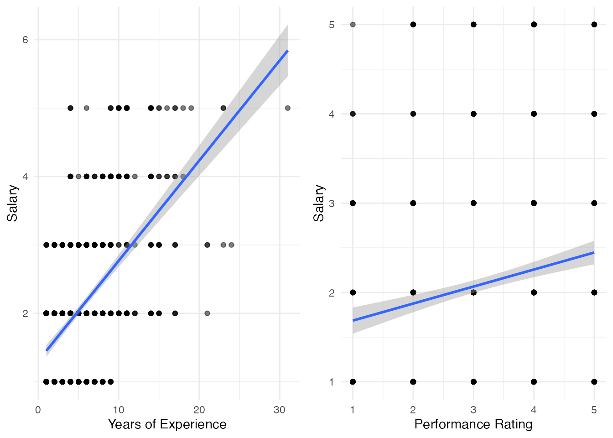
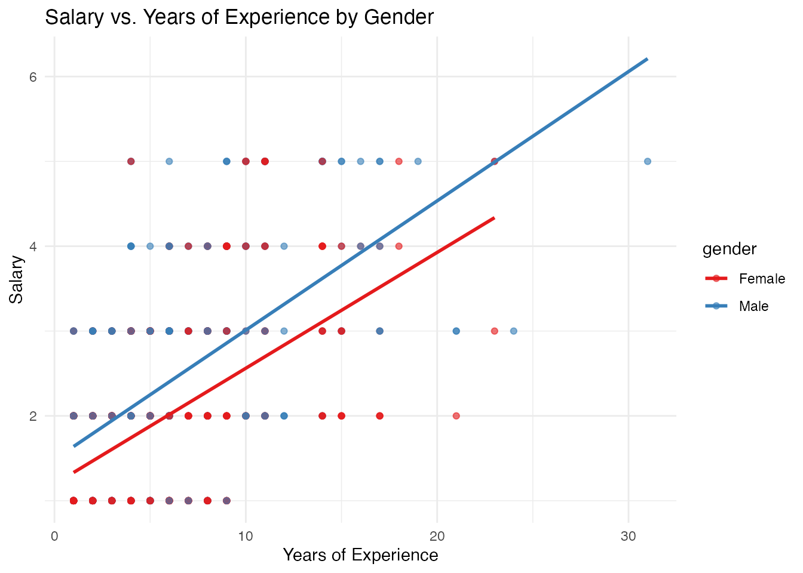

The General Linear Model as a Foundation
The Beauty of Unified Statistical Thinking
Adapted from:
- Statistical Thinking, Chapter 10-11. Russell A. Poldrack (2019).
- Common statistical tests are linear models. Jonas Kristoffer Lindeløv (2019).
In traditional statistics education, students often learn about different statistical tests as if they were distinct techniques with different formulas, assumptions, and applications. This can make statistics feel like a collection of disconnected tools rather than a coherent framework. In reality, many common statistical tests can be understood as special cases of the same underlying model: the general linear model.
The Beauty of Unified Statistical Thinking
What if I told you that many of the statistical techniques you’ve learned are actually the same model?
Consider these seemingly different tests:
- One-sample t-test
- Independent samples t-test
- ANOVA
- Multiple regression
All of these can be represented using the same underlying linear model framework.
![Statistical techniques connected via linear models]
The General Linear Model Framework
The general linear model can be expressed as:
y = \beta_0 + \beta_1 x_1 + \beta_2 x_2 + ... + \beta_n x_n + \varepsilon
Where:
- y is the outcome variable
- \beta_0 is the intercept
- \beta_1, \beta_2, ..., \beta_n are the coefficients
- x_1, x_2, ..., x_n are the predictor variables
- \varepsilon is the error term (normally distributed with mean 0)
Different statistical tests are simply special cases of this general framework.
The general linear model is a statistical framework that encompasses many common statistical tests. At its core, it models the relationship between a dependent variable (y) and one or more independent variables (x). The model assumes that y is a linear function of the x variables, plus some error term.
This equation looks like a multiple regression equation - and that’s because regression is indeed one case of the general linear model. But so are t-tests, ANOVA, and many other statistical procedures.
Building from Simple Cases: One-sample t-test
The one-sample t-test can be represented as:
y = \beta_0 + \varepsilon
Here, \beta_0 is the population mean μ, and we test the null hypothesis that \beta_0 = \mu_0 (some specified value).
Code
# Compare results
t_test_result$estimate # Meanmean of x
5.283248 Code
coef(lm_result)[1] # Intercept (β₀)(Intercept)
5.283248 Code
# Same t-statistic
t_test_result$statistic t
12.1457 Code
summary(lm_result)$coefficients[1, 3][1] 12.1457In the linear model, we’re estimating just the intercept (\beta_0), which represents the mean of y.
Let’s start with the simplest case: the one-sample t-test. This test is used when we want to compare a sample mean to a known value. In the general linear model framework, this is simply a model with only an intercept term.
The intercept in this model represents the mean of the variable y. When we perform a one-sample t-test, we’re essentially testing whether this intercept (the mean) is equal to our hypothesized value.
The t-statistic from the t-test is exactly the same as the t-statistic for the intercept in the linear model.
Building from Simple Cases: Independent t-test
The independent t-test can be represented as:
y = \beta_0 + \beta_1 x_1 + \varepsilon
Where x_1 is a dummy variable (0/1) for group membership.
Code
Estimate Std. Error t value Pr(>|t|)
(Intercept) 5.149251 0.6304443 8.167654 1.821665e-07
groupB 2.267993 0.8915829 2.543782 2.036269e-02\beta_0 = mean of reference group (A)
\beta_1 = difference between groups (B - A)
Moving to the independent samples t-test, we’re now comparing means between two groups. In the general linear model framework, we add a predictor variable representing group membership.
This predictor is a dummy variable: it’s 0 for one group and 1 for the other. The intercept (β₀) now represents the mean of the reference group (the one coded as 0), and the coefficient β₁ represents the difference in means between the two groups.
The t-statistic for testing whether β₁ equals zero is exactly the same as the t-statistic from the independent samples t-test. This tests whether the difference between group means is zero.
From Simple to Multiple Regression
Adding continuous predictors extends the model:
y = \beta_0 + \beta_1 x_1 + \beta_2 x_2 + ... + \varepsilon
Code
# Example data with continuous predictors
set.seed(456)
x1 <- rnorm(20, mean = 50, sd = 10)
x2 <- rnorm(20, mean = 100, sd = 15)
y_multi <- 10 + 0.5 * x1 + 0.3 * x2 + rnorm(20, 0, 5)
multi_data <- data.frame(y = y_multi, x1 = x1, x2 = x2)Code
Estimate Std. Error t value Pr(>|t|)
(Intercept) 13.0864162 7.35982048 1.778089 9.327954e-02
x1 0.4893163 0.07714800 6.342567 7.358414e-06
x2 0.2916602 0.06155792 4.737980 1.902531e-04Interpretation:
- \beta_0 (Intercept): Expected y when all predictors = 0
- \beta_1: Expected change in y for a one-unit increase in x1, holding x2 constant
- \beta_2: Expected change in y for a one-unit increase in x2, holding x1 constant
When we add more predictors to our model, we get multiple regression. Each coefficient now represents the effect of its corresponding predictor on the outcome, while holding all other predictors constant.
The interpretation of these coefficients follows the same pattern as before: the intercept is the expected value of y when all predictors are zero, and each coefficient represents the expected change in y for a one-unit increase in the corresponding predictor, while holding all other predictors constant.
The t-statistics for each coefficient test whether that predictor has a significant effect on the outcome, controlling for all other predictors in the model.
Real-world Example: HR Analytics
Let’s look at a real dataset: HR analytics data from an insurance company.
Code
# Load HR Analytics dataset
hr_data <- read_sav("data/dataset-abc-insurance-hr-data.sav") |> janitor::clean_names()
# View the structure of the dataset
hr_data |>
head(5) |>
kable()| ethnicity | gender | job_role | age | tenure | salarygrade | evaluation | intentionto_quit | job_satisfaction | filter |
|---|---|---|---|---|---|---|---|---|---|
| 2 | 1 | 0 | 28 | 2 | 1 | 2 | 5 | 1 | 1 |
| 2 | 1 | 0 | 60 | 6 | 1 | 3 | 4 | 1 | 1 |
| 2 | 1 | 1 | 21 | 1 | 1 | 2 | 5 | 1 | 1 |
| 0 | 1 | 1 | 23 | 2 | 1 | 3 | 4 | 1 | 1 |
| 3 | 2 | 1 | 23 | 1 | 1 | 1 | 4 | 1 | 0 |
Now let’s apply these concepts to a real-world dataset. This HR analytics dataset contains information about employees at an insurance company, including demographic information, salary, job satisfaction, years of experience, and performance ratings.
We’ll use this dataset to build multiple regression models predicting salary based on various employee characteristics.
Multiple Regression with HR Data
Let’s predict salary based on years of experience and performance rating:
Code
# Create a simple multiple regression model
hr_model <- lm(salarygrade ~ tenure + evaluation, data = hr_data)
# View the model summary using tidy from broom
tidy(hr_model) |>
kable(digits = 2)| term | estimate | std.error | statistic | p.value |
|---|---|---|---|---|
| (Intercept) | 1.00 | 0.09 | 10.94 | 0 |
| tenure | 0.14 | 0.01 | 18.86 | 0 |
| evaluation | 0.11 | 0.03 | 3.96 | 0 |
Code
# Get model fit statistics
glance(hr_model) |>
select(r.squared, adj.r.squared, sigma, df, AIC) |>
kable(digits = 3)| r.squared | adj.r.squared | sigma | df | AIC |
|---|---|---|---|---|
| 0.305 | 0.303 | 0.916 | 2 | 2496.407 |
Here we’ve built a multiple regression model predicting salary based on years of experience and performance rating. The coefficients tell us:
- For each additional year of experience, salary increases by about $1,169, holding performance rating constant
- For each additional point in performance rating, salary increases by about $5,173, holding years of experience constant
The R-squared value tells us that about 45% of the variance in salary is explained by these two predictors combined.
Visualizing the Relationship
Code
# Create plots for each predictor
p1 <- ggplot(hr_data, aes(x = tenure, y = salarygrade)) +
geom_point(alpha = 0.5) +
geom_smooth(method = "lm", se = TRUE) +
theme_minimal() +
labs(x = "Years of Experience", y = "Salary")
p2 <- ggplot(hr_data, aes(x = evaluation, y = salarygrade)) +
geom_point(alpha = 0.5) +
geom_smooth(method = "lm", se = TRUE) +
theme_minimal() +
labs(x = "Performance Rating", y = "Salary")
# Arrange plots side by side
grid.arrange(p1, p2, ncol = 2)
These scatter plots visualize the relationships we modeled. We can see that both years of experience and performance rating have positive associations with salary, as indicated by the upward slopes of the regression lines.
Notice that there’s quite a bit of scatter around the regression lines. This reflects the fact that our model explains about 45% of the variance in salary, leaving 55% unexplained.
Adding a Categorical Predictor
We can also include categorical predictors, like gender:
Code
# Create model with both continuous and categorical predictors
hr_model2 <- lm(salarygrade ~ tenure + evaluation + gender,
data = hr_data
)
# View the model summary
tidy(hr_model2) |>
kable(digits = 2)| term | estimate | std.error | statistic | p.value |
|---|---|---|---|---|
| (Intercept) | 0.47 | 0.12 | 3.81 | 0 |
| tenure | 0.14 | 0.01 | 18.91 | 0 |
| evaluation | 0.11 | 0.03 | 4.12 | 0 |
| gender | 0.38 | 0.06 | 6.39 | 0 |
Code
# Compare model fit
glance(hr_model2) |>
select(r.squared, adj.r.squared, sigma, df, AIC) |>
kable(digits = 3)| r.squared | adj.r.squared | sigma | df | AIC |
|---|---|---|---|---|
| 0.334 | 0.332 | 0.897 | 3 | 2458.259 |
When we add gender to our model, we’re now including a categorical predictor. The coefficient for genderMale represents the difference in salary between males and females, controlling for years of experience and performance rating.
The positive coefficient suggests that, on average, male employees earn about $7,700 more than female employees with the same years of experience and performance rating. This might indicate a gender pay gap in this organization.
Notice also that the R-squared has increased to about 55%, indicating that our model now explains more of the variation in salary.
Interpreting the Model
Code
# Create a visualization of gender differences
hr_data <- hr_data |>
mutate(gender = as_factor(gender))
ggplot(hr_data, aes(x = tenure, y = salarygrade, color = gender)) +
geom_point(alpha = 0.6) +
geom_smooth(method = "lm", se = FALSE) +
theme_minimal() +
scale_color_brewer(palette = "Set1") +
labs(
x = "Years of Experience", y = "Salary",
title = "Salary vs. Years of Experience by Gender"
)
This visualization shows the relationship between years of experience and salary, separated by gender. The parallel lines represent our model’s assumption that the effect of years of experience on salary is the same for both genders - the only difference is in the intercept (the starting point).
The gap between the lines represents the gender effect we saw in our model. Male employees (represented by the red line) tend to have higher salaries than female employees (represented by the blue line) with the same years of experience.
This illustrates how categorical variables work in the general linear model - they shift the intercept (or baseline) for different groups but don’t change the slope of the relationship.